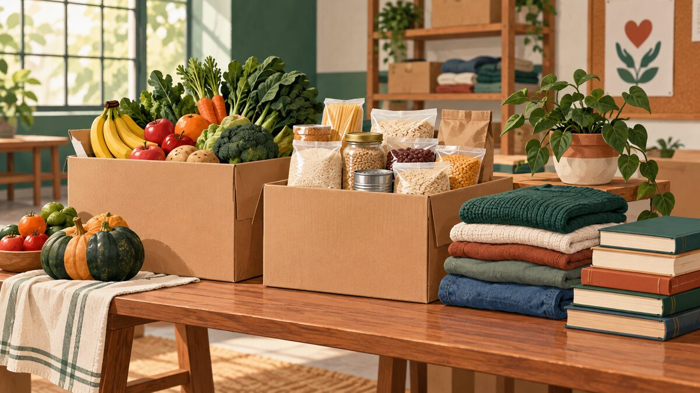

Mesa Solidária
Organização e distribuição de alimentos para famílias em situação de vulnerabilidade social.
FAÇA PARTE
Conheça nossas frentes de atuação e descubra como colaborar.
Organização e distribuição de alimentos para famílias em situação de vulnerabilidade social.
Atividades de leitura e apoio aos estudos, com distribuição de livros e materiais educativos.
Você pode colaborar nas seguintes atividades:
Informe seu interesse no cadastro. A participação depende de orientação da equipe e da disponibilidade de cada atividade.

Combine a entrega com a equipe pelo contato institucional.
As contribuições seriam destinadas à compra de alimentos e materiais educativos para os projetos.
Este projeto acadêmico não recebe pagamentos e não possui chave Pix ou conta bancária para doações.